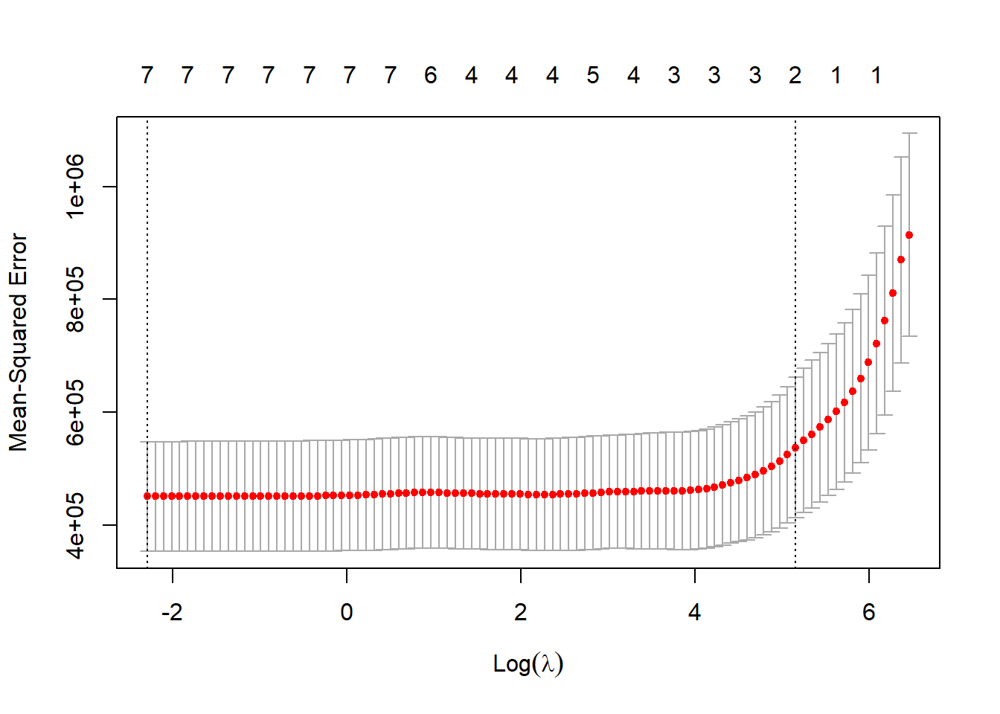

#Data processing.#Redoing the data from scratch. I believe that the "7" in the original data was for native american/pacific islander, the "88" may have been for "other".#Load excel data filedata_location <- here::here("ml-models-exercise", "Mavoglurant_A2121_nmpk.csv")Mav_data <-read.csv(data_location)#Save a rds versionsave_data_location <- here::here("ml-models-exercise", "mav_data.rds")saveRDS(Mav_data, file = save_data_location)#Keeping only OCC=1.OCC_Mav1 <- Mav_data %>%filter(OCC ==1)OCC_Mav1 <- OCC_Mav1 %>%filter(OCC ==1)OCC_Mav1 <-na.omit(OCC_Mav1)DV_Mav1 <- OCC_Mav1 %>%filter(DV >0)DV_Mav1 <- DV_Mav1 %>%filter(DV >0)DV_Mav1 <-na.omit(DV_Mav1)df_Y <- OCC_Mav1 %>%filter(TIME >0) %>%group_by(ID) %>%summarise(Y=sum(DV))df_time0 <- OCC_Mav1 %>%filter(TIME ==0)Combo_Mav1 <-left_join(df_Y, df_time0, by ="ID")Combo_Mav1 <- Combo_Mav1 %>%select(Y,DOSE,AGE,SEX,RACE,WT,HT)Combo_Mav1 <- Combo_Mav1 %>%mutate(RACE =ifelse(RACE %in%c(7,88), 3, RACE ))Combo_Mav1 <- Combo_Mav1 %>%mutate(RACE =factor(RACE))#HT is in meters, WT is in kilograms.Combo_Mav1$BMI <- Combo_Mav1$WT / ((Combo_Mav1$HT)^2) Combo_Mav1 <- Combo_Mav1 %>%mutate(SEX =ifelse(SEX ==1, "M", "F" ),SEX =factor(SEX) )print(Combo_Mav1)
# A tibble: 120 × 8
Y DOSE AGE SEX RACE WT HT BMI
<dbl> <dbl> <int> <fct> <fct> <dbl> <dbl> <dbl>
1 2691. 25 42 M 2 94.3 1.77 30.1
2 2639. 25 24 M 2 80.4 1.76 26.0
3 2150. 25 31 M 1 71.8 1.81 21.9
4 1789. 25 46 F 1 77.4 1.65 28.4
5 3126. 25 41 F 2 64.3 1.56 26.4
6 2337. 25 27 M 2 74.1 1.83 22.1
7 3007. 25 23 M 1 87.9 1.85 25.7
8 2796. 25 20 M 3 61.9 1.73 20.7
9 3866. 25 23 M 2 65.3 1.65 24.0
10 1762. 25 28 M 1 104. 1.84 30.6
# ℹ 110 more rows
#Save a rds versionsave_data_location <- here::here("Combo_Mav1.rds")saveRDS(Combo_Mav1, file = save_data_location)#Okay, that looks pretty good.
#Making the training/testing data.set.seed(rngseed)data_split <-initial_split(Combo_Mav1, prop =3/4)train_data <-training(data_split)test_data <-testing(data_split)print(train_data)
# A tibble: 90 × 8
Y DOSE AGE SEX RACE WT HT BMI
<dbl> <dbl> <int> <fct> <fct> <dbl> <dbl> <dbl>
1 3004. 50 28 M 1 83.2 1.74 27.5
2 1347. 25 41 M 2 81 1.75 26.5
3 2772. 37.5 28 M 1 78.3 1.72 26.5
4 2028. 25 28 F 2 58.9 1.58 23.6
5 2353. 50 37 M 2 99.1 1.78 31.3
6 826. 25 30 M 2 105. 1.88 29.7
7 3866. 25 23 M 2 65.3 1.65 24.0
8 3126. 25 41 F 2 64.3 1.56 26.4
9 1108. 25 48 F 2 79.5 1.62 30.3
10 2815. 37.5 26 M 2 84.5 1.77 27.0
# ℹ 80 more rows
print(test_data)
# A tibble: 30 × 8
Y DOSE AGE SEX RACE WT HT BMI
<dbl> <dbl> <int> <fct> <fct> <dbl> <dbl> <dbl>
1 2549. 25 46 M 1 83 1.78 26.2
2 2353. 37.5 43 F 1 64.4 1.56 26.5
3 2009. 37.5 19 M 2 86.1 1.91 23.6
4 2934. 37.5 46 M 1 71.2 1.67 25.5
5 2085. 37.5 37 M 1 102. 1.81 31.2
6 4835. 50 42 F 1 58 1.58 23.2
7 3514. 50 32 M 2 78.9 1.74 26.1
8 3906. 50 47 M 2 89.3 1.69 31.3
9 3105. 50 45 M 1 99.1 1.81 30.2
10 2027. 25 20 M 1 80.5 1.88 22.8
# ℹ 20 more rows
#I kept getting an error Warning: NAs introduced by coercion", so I am replacing M/F with 1/2.train_data1 <- train_datatrain_data1 <- train_data1 %>%mutate(SEX =ifelse(SEX =="M", 1, 2 ),SEX =factor(SEX) )#Logistic Model of all data with all variables. MAV_log_model <-glm(Y ~ ., data = train_data1)tableA1 <- broom::tidy(MAV_log_model)print(tableA1)
Warning: package 'glmnet' was built under R version 4.3.3
X <-as.matrix(train_data1[,c("DOSE","AGE","SEX","RACE","WT","HT", "BMI")])Y <- train_data1$YMAV_LASSO_cv <-cv.glmnet(X,Y, alpha =1)optimal_lambda <- MAV_LASSO_cv$lambda.mincoef(MAV_LASSO_cv)
8 x 1 sparse Matrix of class "dgCMatrix"
s1
(Intercept) 1602.673193
DOSE 39.806501
AGE .
SEX .
RACE .
WT -6.846157
HT .
BMI .
print(MAV_LASSO_cv)
Call: cv.glmnet(x = X, y = Y, alpha = 1)
Measure: Mean-Squared Error
Lambda Index Measure SE Nonzero
min 0.1 95 450640 97315 7
1se 173.1 15 537481 124533 2
plot(MAV_LASSO_cv)

MAV_LASSO_cv1 <-glmnet(X, Y, alpha =1, lambda = optimal_lambda)coef(MAV_LASSO_cv1)
8 x 1 sparse Matrix of class "dgCMatrix"
s0
(Intercept) 25709.796122
DOSE 55.051486
AGE 2.448014
SEX -610.533827
RACE -22.180979
WT 99.753142
HT -12772.973957
BMI -389.379305
print(MAV_LASSO_cv1)
Call: glmnet(x = X, y = Y, alpha = 1, lambda = optimal_lambda)
Df %Dev Lambda
1 7 57.75 0.1014
plot(MAV_LASSO_cv1) #Why am I getting an empty plot here?#I optimized instead of just setting lambda to 0.1. As it turns out, the optimal value is approximately 0.1.#Let's just keep it un-optimized.MAV_LASSO <-glmnet(X, Y, alpha =1, lambda = optimal_lambda)print(MAV_LASSO)
Call: glmnet(x = X, y = Y, alpha = 1, lambda = optimal_lambda)
Df %Dev Lambda
1 7 57.75 0.1014